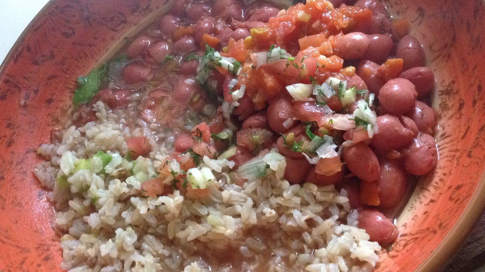

Arroz integral con frijoles y pico de gallo
Ingredients
2×
- 150 g de arroz integral
- 400 g de frijoles rojos cocidos
- 1 diente de ajo
- comino
- sal
- 2 tomates
- 1 cebolleta
- cilantro
- zumo de lima

Preparación
Paso 1
Cocer 150 g de arroz integral unos 35min.
Paso 2
Calentar 400 g de frijoles rojos cocidos con su caldo, 1 diente de ajo picado, comino y sal.
Paso 3
Picar 2 tomates, 1 cebolleta y cilantro, y aliñar con zumo de lima y sal.
Paso 4
Servir el arroz con los frijoles y el pico de gallo por encima.